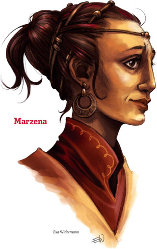
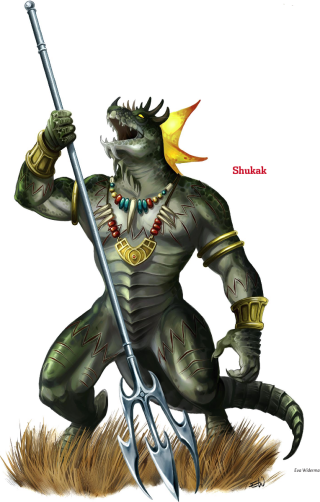

Week 12 - Swampy dangers.
A good session this week - all present and accounted for. Everyone was on time, we didn't run late or finish early. Everyone is level 5, I reviewed the rules and the module before the session and was all prepared - good to go.
Flash the beguiler prepares to question the captured shaman, using a Detect Thoughts spell before he does so. The Lizardmen, it transpires, attacked Blackwall Keep because the pinks were responsible for a dreadful calamity that befell their tribe. The shaman is unwilling to talk, and the mental images are not clear, but it was something to to with terrible green worms - writhing masses of the tiny horrors.
In response to queries concerning where the tribe might have retreated to, Flash gets a sense of home, a picture of a tangle of ancient Mangaroo trees atop a low knoll toward the south in the middle of a swamp. It already being late evening, the party elect to being their pursuit the next day. The shaman is made prisoner by the Blackwall Keep guards.
As so many lizardmen have fled home through the swamp, tracking them turns out to be relatively easy. The worst part is simply the rigours of the swamp itself. It takes two day so arrive at their goal, with relatively few backtrackings needed. The party is attacked by some crocs on the first day. That night they camp near a petrified crocodile - clearly the victim of a cockatrice. But the bird is long flown - moss grows on the statue. Next day they encounter a gigantic constrictor snake, who gives Tom some unpleasant moments before the party hack it apart. Late that afternoon, the party come across a mangaroo thicket, which Flash recognises as the shaman's home.
I kind of forget how this next bit happened. Oh well.
The party watch and wait. A pair of guards emerges from the thicket to do a sweep, and the party attack. One guard is slain, but the other is captured. Flash again uses his Detect Thoughts spell. This captured guard will become their GPS.
I tried to play detect thoughts as written - surface impressions only, not a full telepathy. However, a standard lizardman does not have a great will save and so a Beguiler would have no trouble. Furthermore, detect thoughts allows the beguiler to sense rooms full of lizardmen and avoid them. So all in all, the party had no trouble navigating the lair.
They move into the lair. The lair inside is a tangle of mangaroo roots and trunks, with vines making relatively impenetrable walls to delineate chambers and corriors. Aolong these passageways, the gruond is carefully kept clear of growth.
At the first intersection, their unwilling captive reveals what it down the various corridors. To the left - a pair of harpies. To the right, a living chamber. Ahead and to the left is the most direct route to the captives. It runs past a tame assassin vine. But Flash probes further - will this tame vine attack stangers? The lizardman does not know.
The party elect to deal with the harpies. Flash casts a spell of silence and the party approach the perch. The harpies are sleeping, and in a few seconds are dead. The party then backtracks and takes the middle way. Frith uses a spell of Sanctuary to get past the deadly vine, but the semisentient photovore overcomes its effect - attacking Frith and using its Entangle ability on the other two members of the party near it. The party battle, but the sound of their conflict is muffled and dispersed by the tangle of mangarro. Still, they have not a lot of time before they are discovered.
Their captive and Flash's spell guide them past the sleeping chambers to a four way intersection. To the right is the throne room of the chief. To the left is the shaman and the prisoners. Jericho sneaks into the shaman's room. He sees Hiska the shaman bandaging an unconscious Marzeena, and returns to the party - reporting that there are two prisoners and one guard. He then heads back, moving silently, to sap the shaman.
He sneaks in and saps Hishka, but she is a tough old lizard and it will take more than one smack to drop her. Frith comes in behind, takes stock of the situation - noting the bandages etc - and casts Calm Emotions - enough to get jericho to break off the attack.
An interesting development - our rogue is getting bored. Yes, the next bit is a trifle forced. So sue me for running a railroad campaign - it's my first try at DMmming.
Hiska reacts … oddly. She has her own agenda, and has been expecting somethign like this. She believes that attacking the pinks is suicidal, and wants to get rid of the current leadership. And so she asks the PCs to eliminate the current chief and his leiutenant. The party agree. The leiutenant falls easily, the chief somewhat less so. Hishka thanks them, and offers the prisoners (although Marzeena is still unconscious and cannot be moved quite yet).
Hishka also asks for a little help with a different matter. One of the lizardmen is ill with a strange malady, and Hishka asks for Frith's help. Frith's initial diagnosis is inconclusive, so the party wait for the next morning for him to ask his deity for a bit of cheese from the Spell Compendium named Wieldskill. With the divine boost to his diagnostic acumen, Frith determines that the unfortunate lizardman is host to a parasitic worm - a green one very much like the one they found in Filge's lab. Once found it is easy enough to remove, but what's the story?
Hishka gives the party a little background, telling the party of the worms and the "Great One" that came to the tribe's rescue:
About ten years ago, a sudden blight of ravenous green worms ate through entire clutches of lizardfolk hatchlings in numerous tribes throughout the Mistmarsh. With an entire generation wiped out, many tribes fell to desperation and depravity. Others were forced to take shelter and wait for new warriors to come of age. During these dark times, the Twisted Branch tribe received a visitor.
This visitor was Ilthane, a black dragon. She seemed to know much of the green worms that plagued the lizardfolk, and when she told them that arcanists from Sharn were responsible, the lizardfolk grew angry indeed. Over the next several months, the Twisted Branch nurtured their newest generation of warriors into fighters, and in the interim, Ilthane graciously offered to guard the tribe's clutch of eggs until they regained their foothold in the Mistmarsh.
Well! How came that unfortunate lizardman to be hosting a worm - especially given that the pinks were nowhere around when it happened? What is the deal with Ilthane the great one? What might Marzeena reveal when she regains conciousness? Should the party simply return to Blackwall Keep with their prisoners and their peace deal … or is there more to be discovered here? Beats me - I haven't quite worked out the details yet. But fear not! The adventure will continue!